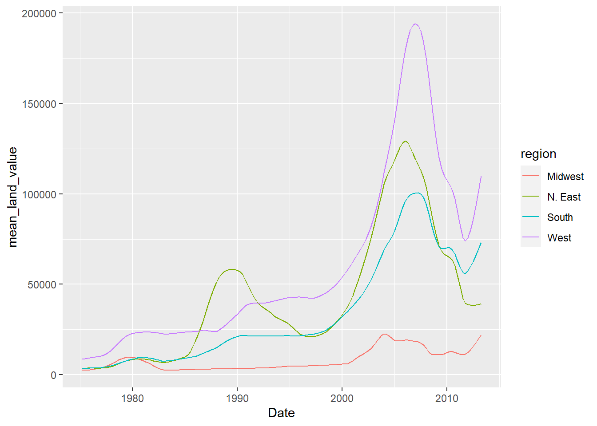
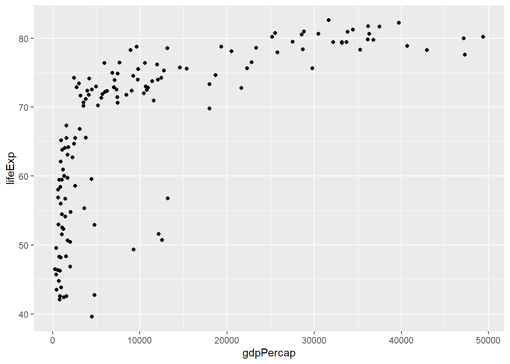
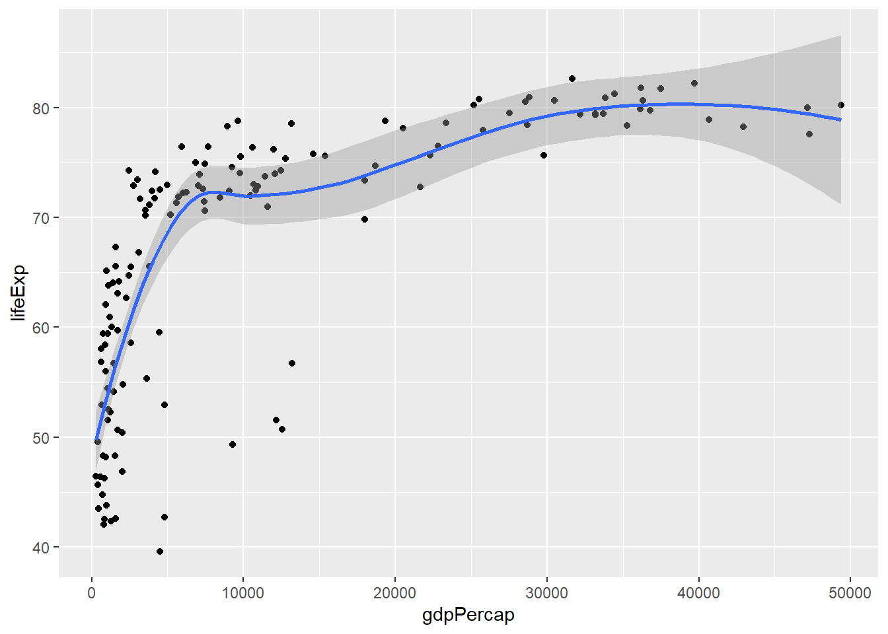
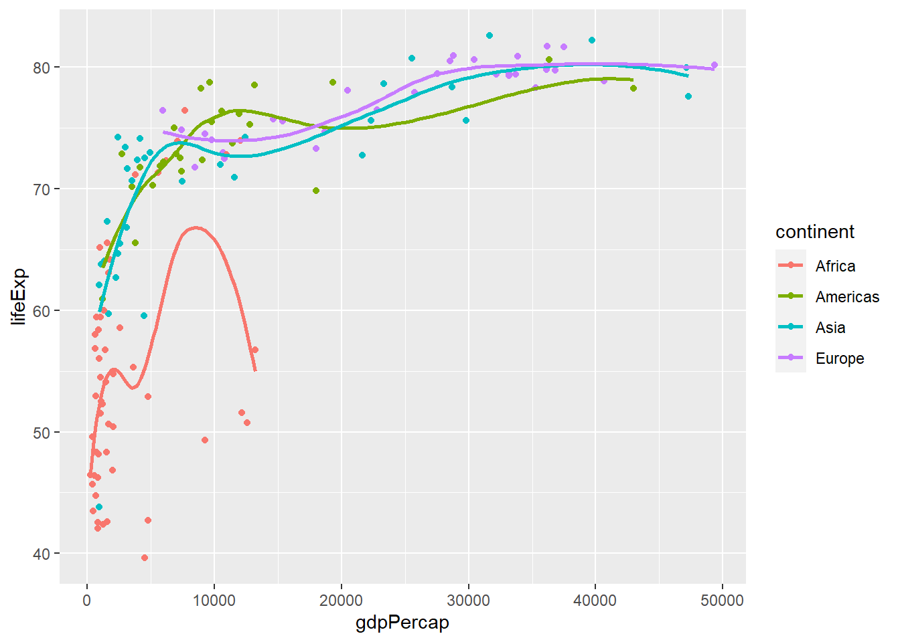
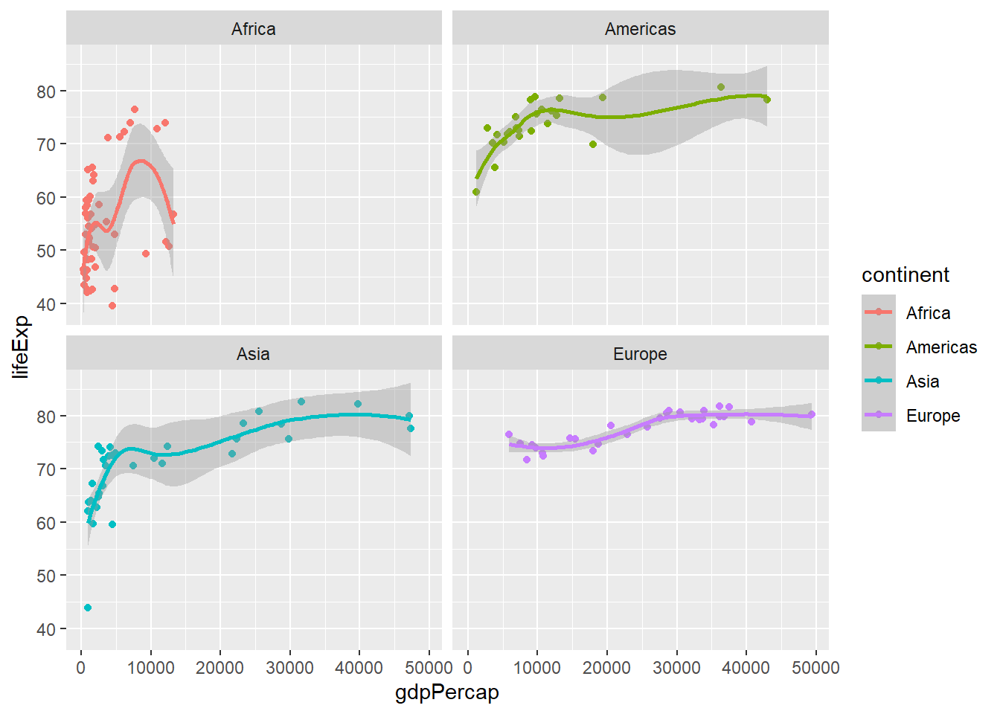
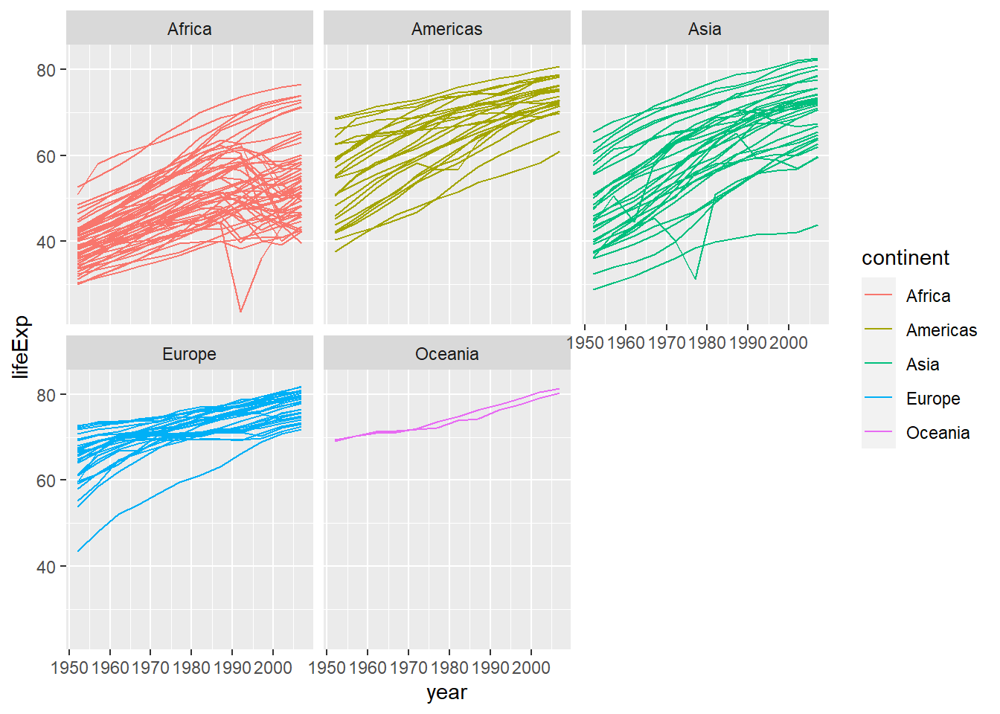
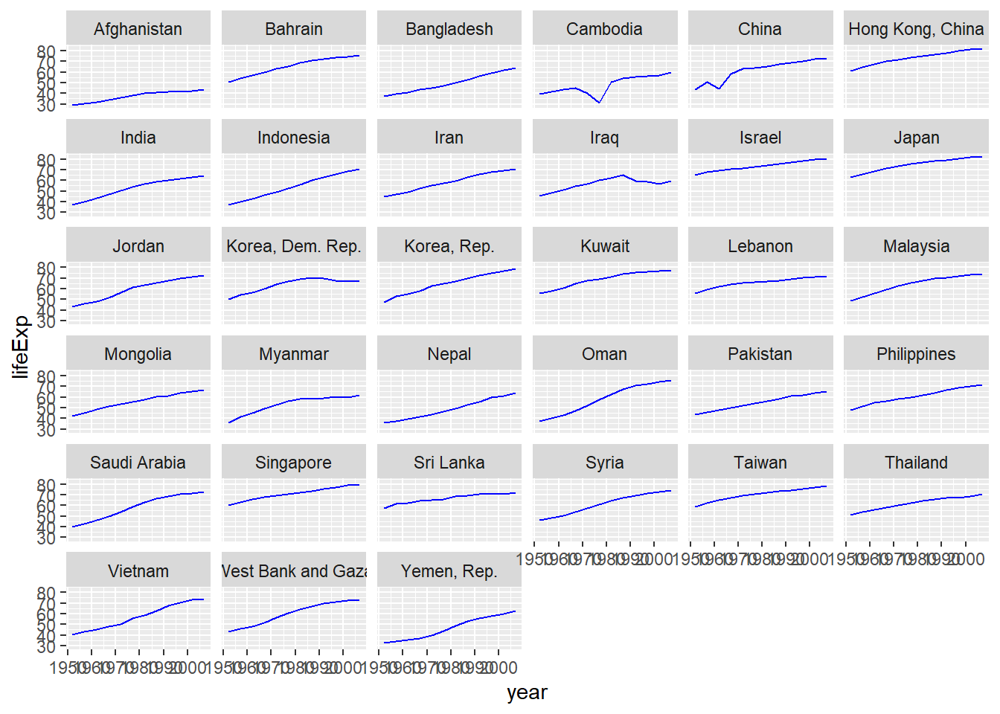

To start, load all the required packages with the following code. Install them if they are not installed yet.
library(tidyverse)
library(knitr)
library(ggplot2)
library(gapminder)housing <- read_csv("https://raw.githubusercontent.com/nt246/NTRES-6100-data-science/master/datasets/landdata_states.csv")
housing %>%
head() %>%
kable() | State | region | Date | Home.Value | Structure.Cost | Land.Value | Land.Share..Pct. | Home.Price.Index | Land.Price.Index | Year | Qrtr |
|---|---|---|---|---|---|---|---|---|---|---|
| AK | West | 2010.25 | 224952 | 160599 | 64352 | 28.6 | 1.481 | 1.552 | 2010 | 1 |
| AK | West | 2010.50 | 225511 | 160252 | 65259 | 28.9 | 1.484 | 1.576 | 2010 | 2 |
| AK | West | 2009.75 | 225820 | 163791 | 62029 | 27.5 | 1.486 | 1.494 | 2009 | 3 |
| AK | West | 2010.00 | 224994 | 161787 | 63207 | 28.1 | 1.481 | 1.524 | 2009 | 4 |
| AK | West | 2008.00 | 234590 | 155400 | 79190 | 33.8 | 1.544 | 1.885 | 2007 | 4 |
| AK | West | 2008.25 | 233714 | 157458 | 76256 | 32.6 | 1.538 | 1.817 | 2008 | 1 |
1.1 Washington DC was not assigned to a region in this dataset. According to the United States Census Bureau, however, DC is part of the South region. Here: - Change the region of DC to “South” (Hint: there are multiple ways to do this, but mutate() and ifelse() might be helpful) - Create a new tibble or regular dataframe consisting of this new updated region variable along with the original variables State, Date and Land.Value (and no others) - Pull out the records from DC in this new data frame. How many records are there from DC? Show the first 6 lines.
housing$region <- ifelse(housing$State == "DC" & is.na (housing$region), "South", housing$region)
housing %>%
filter(State == "DC") %>%
select(region, State, Land.Value,Date) %>%
head(6) %>%
kable() | region | State | Land.Value | Date |
|---|---|---|---|
| South | DC | 290522 | 2003.00 |
| South | DC | 305673 | 2003.25 |
| South | DC | 323078 | 2003.50 |
| South | DC | 342010 | 2003.75 |
| South | DC | 361999 | 2004.00 |
| South | DC | 382792 | 2004.25 |
##1.2
housing<- housing %>% group_by(region,Date)%>%
mutate(mean_land_value = mean(Land.Value))
housing %>% group_by(region,Date)%>%
mutate(mean_land_value = mean(Land.Value)) %>%
select(region, Date, mean_land_value) %>%
filter(region=="Midwest")%>%
head(6) %>%
arrange(mean_land_value) %>%
kable() | region | Date | mean_land_value |
|---|---|---|
| Midwest | 1975.25 | 2452.167 |
| Midwest | 1975.50 | 2498.917 |
| Midwest | 1975.75 | 2608.167 |
| Midwest | 1976.00 | 2780.000 |
| Midwest | 1976.25 | 2967.333 |
| Midwest | 1976.50 | 3212.833 |
##1.3
housing %>%
ggplot(aes(x=Date,y=mean_land_value,color=region)) +
geom_line()
##2
gapminder%>%
head()%>%
kable()| country | continent | year | lifeExp | pop | gdpPercap |
|---|---|---|---|---|---|
| Afghanistan | Asia | 1952 | 28.801 | 8425333 | 779.4453 |
| Afghanistan | Asia | 1957 | 30.332 | 9240934 | 820.8530 |
| Afghanistan | Asia | 1962 | 31.997 | 10267083 | 853.1007 |
| Afghanistan | Asia | 1967 | 34.020 | 11537966 | 836.1971 |
| Afghanistan | Asia | 1972 | 36.088 | 13079460 | 739.9811 |
| Afghanistan | Asia | 1977 | 38.438 | 14880372 | 786.1134 |
##2.1
gapminder %>%
filter(year==2007)%>%
ggplot(aes(x=gdpPercap,y=lifeExp))+
geom_point()
##2.2
gapminder %>%
filter(year==2007)%>%
ggplot(aes(x=gdpPercap,y=lifeExp))+
geom_point()+
geom_smooth() ##2.3
gapminder %>%
filter(year==2007)%>%
filter(continent!="Oceania")%>%
ggplot(aes(x=gdpPercap,y=lifeExp,col=continent))+
geom_point()+
geom_smooth( se=FALSE)
##2.4
gapminder %>%
filter(year==2007)%>%
filter(continent!="Oceania")%>%
ggplot(aes(x=gdpPercap,y=lifeExp,col=continent))+
geom_point()+
geom_smooth()+
facet_wrap(.~continent)
##2.5
gapminder %>%
ggplot(aes(x=year, y=lifeExp, col=continent, group=country))+
geom_line()+
facet_wrap(.~continent)
##2.6
gapminder %>%
filter(continent=="Asia") %>%
head(6) %>%
kable() | country | continent | year | lifeExp | pop | gdpPercap |
|---|---|---|---|---|---|
| Afghanistan | Asia | 1952 | 28.801 | 8425333 | 779.4453 |
| Afghanistan | Asia | 1957 | 30.332 | 9240934 | 820.8530 |
| Afghanistan | Asia | 1962 | 31.997 | 10267083 | 853.1007 |
| Afghanistan | Asia | 1967 | 34.020 | 11537966 | 836.1971 |
| Afghanistan | Asia | 1972 | 36.088 | 13079460 | 739.9811 |
| Afghanistan | Asia | 1977 | 38.438 | 14880372 | 786.1134 |
##2.7
gapminder %>%
filter(continent=="Asia") %>%
ggplot(aes(x=year, y=lifeExp))+
geom_line(col="blue")+
facet_wrap(.~country)